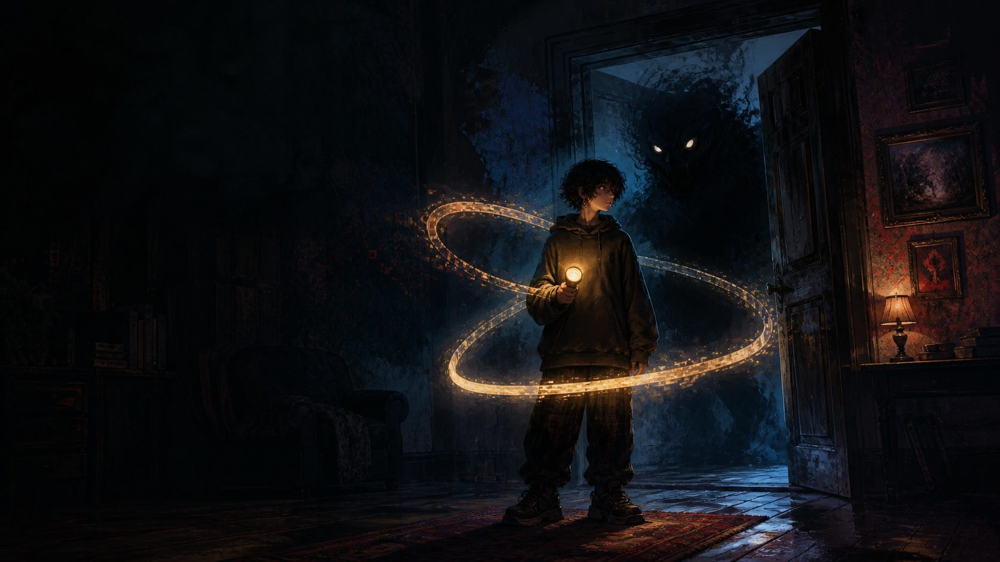

Por que a gente gosta de sentir medo nos jogos de terror

Tem uma coisa aparentemente absurda no gênero: a gente paga, senta no escuro e escolhe passar mal de propósito. Coração disparado, mãos suando, aquele frio de saber que uma coisa horrível vai saltar. E, terminando, a vontade é jogar de novo. Por que um bicho tão avesso ao perigo quanto o ser humano procura o medo por diversão? A psicanálise tem uma resposta bonita, e ela começa com uma criança e um carretel.
O carretel de Freud: dominar o que assusta
Em 1920, Freud descreveu uma cena que observou num neto pequeno. O menino, sempre que a mãe saía, ficava aflito. Para lidar com isso, inventou uma brincadeira: jogava um carretel para longe dizendo algo como "foi" (fort) e puxava de volta dizendo "aqui" (da). Freud entendeu o gesto: a criança estava encenando, ativamente, a angústia que sofria passivamente. Em vez de só sofrer o sumiço da mãe, ela agora comandava o sumiço e o retorno. Repetir a experiência ruim, mas no controle, é um jeito da mente domar aquilo que a apavora. Freud chamou isso, mais amplamente, de compulsão à repetição.
O jogo de terror é um Fort-Da gigante
Agora troca o carretel pelo controle. No jogo de terror, você encena o medo de propósito, só que dessa vez é você quem aperta os botões, quem decide entrar na sala escura, quem avança pelo corredor. A angústia que na vida real chega sem aviso, aqui você convoca. Isso muda tudo: o susto continua real no corpo, mas você está no comando da situação que o produz. É o Fort-Da em escala épica, transformar o desamparo em controle, viver o pavor sabendo que, no fundo, a mão está no leme.
O alívio que vem depois do susto
Repara no que acontece quando o perigo passa: um alívio quase eufórico, um riso nervoso, vontade de continuar. O terror funciona por ciclos de tensão e descarga. A cada susto superado, o corpo despeja a adrenalina acumulada e a mente registra uma pequena vitória: "eu aguentei". É um treino emocional seguro, você experimenta o limite do medo dentro de uma moldura que garante que nada de verdade vai te acontecer. Sai-se do jogo de terror não destruído, mas curiosamente fortalecido, como quem provou a si mesmo que dá conta.
Encarar o monstro para encarar a si mesmo
Há ainda uma camada mais profunda. O horror costuma pegar exatamente aquilo que a gente prefere não olhar, a morte, o corpo que apodrece, a culpa, a loucura, e transforma em monstro visível, enfrentável. Dar forma ao inominável é, paradoxalmente, um jeito de dominá-lo: um medo com rosto e com regras é menos aterrorizante que uma angústia difusa e sem nome. O jogo de terror empresta contorno aos nossos medos mais fundos e permite atravessá-los de controle na mão. É por isso que o gênero, longe de ser só sadismo digital, pode ser profundamente terapêutico.
Ter medo, no controle, é ensaiar coragem
Então quem gosta de terror não é masoquista nem estranho, está fazendo, adulto e no escuro da sala, o mesmo que aquele menino fazia com o carretel: pegando a angústia pela mão e dizendo "agora quem manda sou eu". Cada corredor enfrentado é um pequeno ensaio de coragem. E talvez seja essa a promessa secreta do gênero: a de que dá para olhar o que assusta de frente e, quando os créditos sobem, continuar inteiro.
Curte esse tipo de leitura, psicanálise misturada com game? No meu perfil do Mercado Livre eu deixo indicações de jogos que valem a análise. 😉
Minhas indicações (Mercado Livre) → Link de afiliado (Mercado Livre). Este site pode ganhar comissão em compras qualificadas, sem custo a mais para você.Leia também
Por que o monstro que te encara dá mais medo Silent Hill 2: a culpa e o retorno do recalcadoReferências
Freud, S., Além do Princípio do Prazer (1920): o jogo do Fort-Da e a compulsão à repetição.
Comentários